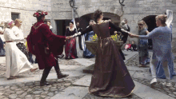

O que foi a Idade Média?
A Idade Média é o nome do período da história localizado entre os anos 476 e 1453. A nomeação Idade Média é utilizada pelos historiadores dentro de uma periodização que engloba quatro idades: Antiga, Média, Moderna e Contemporânea. Quando nos referimos à Idade Média, geralmente referimo-nos a assuntos relacionados, direta ou indiretamente, com a Europa. A Idade Média iniciou-se com a desagregação do Império Romano do Ocidente, no século V. Isso deu início a um processo de mescla da cultura latina, oriunda dos romanos, e da cultura germânica, oriunda dos povos que invadiram e instalaram-se nas terras que pertenciam a Roma, na Europa Ocidental.Desse período destacam-se o processo de ruralização que a Europa viveu entre os séculos V e X; o fortalecimento da Igreja Católica; a estruturação do sistema feudal, não apenas economicamente mas também política e socialmente. A partir do século XI, o renascimento urbano e comercial abre caminho para a crise do século XIV, que determina o fim da Idade Média.
Quando começou e quando terminou a Idade Média?
Como mencionado, a Idade Média é assim chamada dentro de uma periodização, estipulada pelos historiadores, que a determina entre os anos de 476 e 1453. O que estipula o início da Idade Média é a destituição de Rômulo Augusto do trono romano, em 476, e o que estipula seu fim é a conquista de Constantinopla pelos otomanos, em 1453. A Idade Média é dividida pelos historiadores em duas grandes fases, que são:
- Alta Idade Média: século V ao século X;
- Baixa Idade Média: século XI ao século XV;
Durante a Alta Idade Média, a Europa passava pelas transformações derivadas da desagregação do Império Romano e o feudalismo estava em formação. A Baixa Idade Média foi o período auge do feudalismo e no qual a Europa começou a sofrer transformações oriundas do renascimento urbano e comercial.
Por que o nome “Idade Média”?
O nome Idade Média, usado para referir-se a esse período entre 476 e 1453, foi uma invenção dos renascentistas. Uma das primeiras menções a essa época como “tempo médio”, segundo o historiador Hilário Franco Júnior, remonta ao bispo italiano Giovanni Andrea. Essa ideia popularizou-se no século XVI, durante o renascimento. O sentido por trás dessa nomenclatura era pejorativo, uma vez que, na visão dos renascentistas, a Idade Média teria sido um tempo marcado pela interrupção da tradição clássica, isto é, greco-romana. Nessa perspectiva, tal tradição estava sendo retomada na época deles, inclusive, por isso, eles chamaram seu próprio período de “renascimento”. Eles acreditavam estar vivendo um momento de renascimento intelectual, científico e artístico. Isso nos leva a concluir que, na ótica renascentista, a Idade Média era um período ruim, de atraso e de interrupção no progresso humano. Outros grupos, conforme seus interesses, teciam suas críticas a essa Idade, sempre a taxando como “ignorante”. Essa visão negativa fez com que muitos a chamassem de “Idade das Trevas”, um termo negativo e rechaçado pelos historiadores. A primeira menção à Idade Média dessa maneira remonta a Francesco Petrarca, que, no século XVI, já a chamava de “tenebrae”.
Principais acontecimentos

A Idade Média foi muito longa e, logicamente, impactada por diferentes acontecimentos importantes para a história humana. A Idade Média, em si, é fruto do fim do Império Romano do Ocidente,após o qual uma série de reinos germânicos estabeleceu-se na Europa Ocidental.
- O caso mais simbólico foi o dos francos, povo germânico que se estabeleceu na Gália e formou um reino governado, primeiro, pelos merovíngios e, depois, pelos carolíngios. Estes foram a primeira grande dinastia a governar um reino na Europa, e, por meio de Carlos Magno, seu principal rei, formaram um império com um território bastante vasto.
- O surgimento do islamismo no século VII marcou um rompimento do Ocidente com o Oriente, sobretudo quando os muçulmanos conquistaram a Península Ibérica. O avanço muçulmano na Europa só foi interrompido por Carlos Martel, em 732. Séculos depois, a Igreja Católica encontrou na guerra contra os muçulmanos uma forma de estender sua riqueza até o Oriente.
- As Cruzadas ocorreram do século XI ao século XII e mobilizaram tropas cristãs contra os muçulmanos, na Palestina e no norte da África. Ao todo foram nove cruzadas, sendo a primeira delas convocada pelo Papa Urbano II, em 1095. A nona Cruzada foi encerrada em 1272, e o objetivo inicial dos cristãos (conquistar Jerusalém) não foi alcançado.
Outros destaques que podem ser feitos sobre a Idade Média são o Império Bizantino e o estabelecimento da Inquisição. Assuntos também relevantes são a cultura e a ciência medievais, geralmente pouco estudadas.
Fim da Idade Média
O fim da Idade Média tem relação com o renascimento urbano e comercial que a Europa experimentou a partir do século XI. Novas técnicas agrícolas permitiram o aumento da produção de víveres, gerando um excedente que pôde ser comercializado. O aumento na produção de alimentos garantiu um aumento populacional, mas também do comércio e, consequentemente, da circulação de moeda. Com o aumento populacional, o número de pessoas mudando-se para as cidades aumentou e a quantidade de comerciantes ao redor delas também. O século XIII intensifica esse processo de êxodo rural, pois as produções agrícolas ruins fizeram com que muitos buscassem sobreviver nas cidades. O século XIV é quando os historiadores estipulam a fronteira final da Idade Média. Trata-se de um século de crise, caracterizado por guerras que causaram destruição e geraram mais fome, e isso resultou na Peste. O século XIV é marcado pela famosa Peste Negra — surto de peste bubônica responsável pela morte de 1/3 da população europeia ao longo desse período. A fome gerou grandes revoltas de camponeses, sobretudo a partir do século XIII, e o crescimento urbano colocou fim no isolamento feudal. Revoltas também aconteceram nas grandes cidades, principalmente pela falta de empregos. Novas estruturas de poder começaram a surgir, a organização política dos reinos modificou-se e, assim, surgiram os Estados nacionais. O enfraquecimento do feudalismo e o fortalecimento do comércio resultaram no mercantilismo. Quando Constantinopla cai e o comércio com o Oriente fecha-se, a Europa volta-se para o Oeste. A exploração do Oceano Atlântico abriu novas fronteiras e consolidou o fim da Idade Média.
